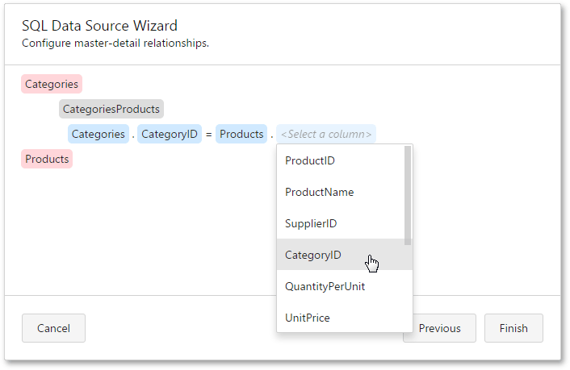
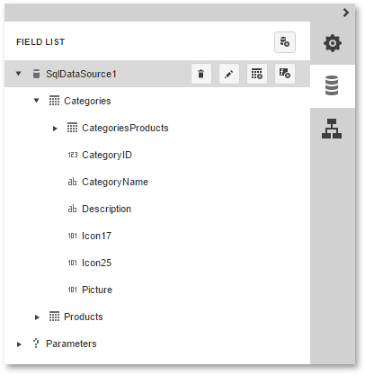

Configure Master-Detail Relationships
This page is displayed if two or more tables and/or views are selected on a previous wizard page: Create a Query or Select a Stored Procedure.
On this page, you can define master-detail relationships between two or more queries by specifying their corresponding key fields.

On clicking Finish, the new data source will be added to the report and displayed in the Field List.

To use the created data source in a report, assign this data source to the report's Data Source property and set the Data Member property to a required query name.